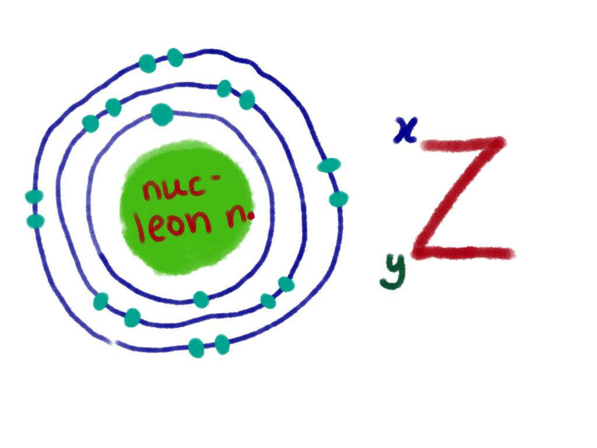

Matter can be divided into two: element and compund. They can then be divided into subcatagories
atom, molecule and ion, represented by this chart:
There are also 3 physical states of matter: solid, liquid and gas. There are different properties
for different states of matter, all listed in the table below.
Physical States of Matter
Arrangement of Particles
Movement of Particles
Kinetic Energy
Rate of Diffusion
Solid
Packed very closely
Vibrate at a fixed position
Low
Low
Liquid
Packed closely but have empty space between them
Move randomly and slowly
High on average
Average
Gas
Particles very far apart
Move randomly and rapidly in all directions
High speed
High
The changes of state of matter include melting, boiling/evaporation, vaporisation, freezing
condensation and sublimation.
Cooling curve
A cooling curve is a line graph that represents the change of phase of matter, typically
from a gas to a solid or a liquid to a solid. The independent variable is time and the
dependent variable is temperature.
Section
Description
P
The substance exists in the gaseous state.
Has very high energy and is moving randomly.
The intermolecular force is weak.
P-Q
The particles lose kinetic energy during cooling.
The particles get closer to each other and the temperature drops.
S
The substance is still in the gas state.
The gas begins to condense and become liquid.
Q-R
Stronger bonds form as gas changes into a liquid.
The substances exist both in gas and liquid.
The energy produced during the formation of bonds is equal to the heat released to the
surroundings during cooling.
This is known as the freezing point.
R
The substances exist fully in the liquid state.
R-S
The temperature keeps decreasing, causing the naphthalene molecules to lose heat energy.
The movement of the particles slows down and they move close to each other.
All matter is composed of extremely small particles called atoms.
All atoms of a given element are identical.
Atoms cannot be created or divided into smaller particles.
In a chemical reaction, atoms are separated, combined, or rearranged.
J.J. Thomson (1897)
Atoms consist of small negatively charged particles called electrons.
The atom is a positively charged spherical cloud with electrons uniformly distributed throughout.
Ernest Rutherford (1911)
Discovery of the proton, a positively charged particle.
Most of the atom's mass is concentrated in the nucleus, which is at the center of the atom.
The atom is mostly empty space.
Niels Bohr (1913)
Electrons move around the nucleus in fixed shells.
Each shell has a fixed radius from the nucleus.
Electrons in each shell have their own fixed energy levels.
James Chadwick (1932)
Discovery of neutrons in the nucleus through experiments involving beryllium-9 and alpha particles.
Proposed that neutrons contribute significantly to the mass of an atom.
Conclusion
The development of the atomic model illustrates the progression of scientific thought and
experimentation. Each model built upon the previous one, leading to a more comprehensive
understanding of atomic structure and behavior.
Neils Bohr suggested there is an energy level for each electron that occupy the orbits.
So, there's a maximum number of electrons for each shell. Here's a visual representation
of an atomic structure of an atom with maximum electrons.

Beside it is the standard representation of a atom, where 'Z' refers to symbol of
element, 'x' for nucleon number and 'y' for proton number. Other than that,
the electrons on the outermost shell of the atom is also known as valance electron, which
can tell its group number.
Proton number and nucleon number
To find proton number, nucleon number, neutron number and so on, a few equations can
be used:
Proton number = Number of proton
Nucleon number = Number of protons + Number of neutrons